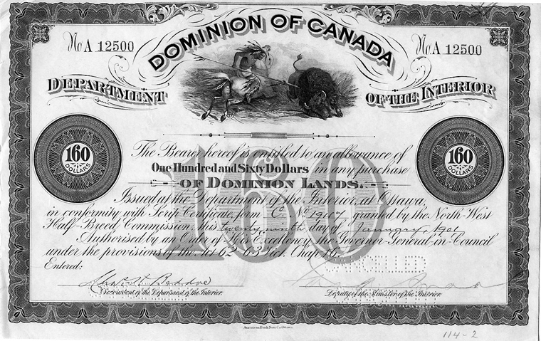

My mother was a silent leader. She was the special lady who took care of everything behind the scenes, she was the glue that kept our small, special kinship together. She had never asked for more recognition, never complained, so for that thank you for everything you do. My mother had first come to Edmonton in the year 2005 with only 500$ to her name. She had come to Edmonton to look for new opportunities and a stable job to help provide for her family. We had lived in a small humble apartment, she had gone to work everyday for the next 6 months, while my father had stayed home to take care of me. Despite being brand new to the country, speaking a language she wasn't familiar with. I was only 9 months old at this time so I cannot recall except through stories, but I cannot begin to imagine the strength it had taken my mother to work everyday with the struggles, and take care of a newborn baby in the evening. She had persevered and kept showing up for not only me, but for our whole family. I can confidently say that without these efforts I would not be the man I am today.
Me and Mom
When watching the Tales My Kookum Told Me by New Dane Metis Women1. I felt deeply touched by their stories, the struggles and humble beginnings of their families. their mothers may not have been the wealthiest but they provided for their families while teaching them essential life lessons to be better human beings. These stories could have been overlooked and forgotten, but through sharing. Their stories about their mother keeps their mother's essence alive. In First Nation culture there is a deep emphasis on verbal storytelling to never let these stories die as these stories have the ability to shape us and teach us valuable things. So in tradition hearing my mothers struggles and triumphs through spoken mouth made it even more special and inspiring.
During this time, women played a pivotal role in preserving the cultural landscapes of First Nations. When settlers first arrived and established themselves, they had offered scrips to as a form of compensation indigenous people. In exchange for land, they were given these scrips which could be used to claim land or money. Little did they know these scrips would become highly corrupt. The process of claiming these scrips were so complicated they had left many families and communities empty handed. For example one of the reasons they were so complicated was because you had to speak to multiple levels of legislation. With the lack of access to money and land it left communities struggling to grow ultimately marginalized communities and culture.
Image of a Scrip
Much like my mother's quiet leadership, Metis women began to lead their communities, often from the heart of their homes. As Stevenson and Troupe explain, “For indigenous women, gathering together around kitchen tables… is a practice of empowerment and resistance. Activism that begins in the home should be seen as starting from a place of strength and support based on kinship, family, and community structures.”2 Metis were the backbone of these grassroots movements, often overlooked. These efforts ultimately helped Metis people gain recognition by the Canadian government in 1982 also known as the Golden Age for metis rights and activism. They may not have always gotten the recognition they deserved, but we must strive to ensure that their contributions are celebrated in public narratives and media.
These stories whether they come from Tales My Kookum Told me, or my own personal stories. Mothers are a source of power and perseverance. They may not always speak up for themselves but they deserve all the recognition in the world. Especially to the mothers of the metis children who had paved the way for them to be recognized as people. To put food on the table but to also fight for rights silently in the background should not go unnoticed. We must make more effort in honoring their efforts and dedication by continuing to fight for equity and justice. And to support more indigenous-led initiatives led by women. With this in mind we will be able to call for reform and create a society where nobody is overlooked and all metis people, especially the mothers and grandmothers will be celebrated.
Off note: It is my mothers birthday soon!
If you ever read this mom
Happy birthday Mom ! I love you very much!! thank you for everything you do for me, I will never be able to thank you enough.